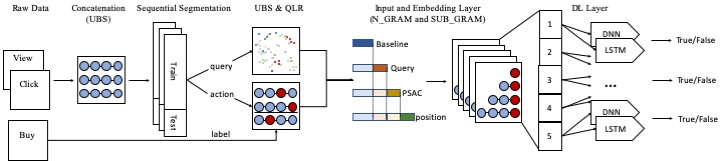
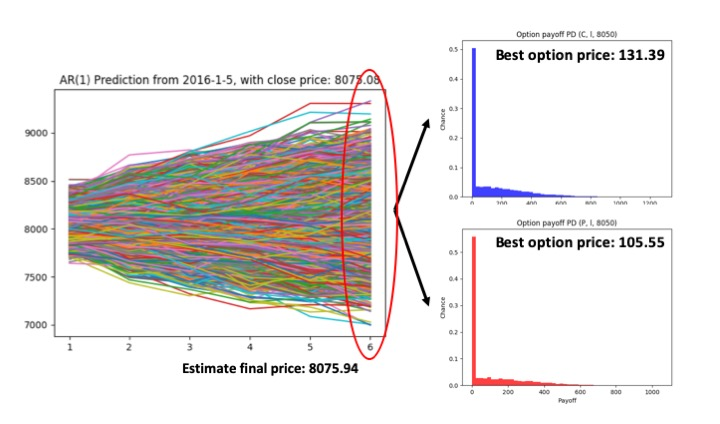

|
Hi! I am Jimmy.
I am attending CMU ETC in 2020 Fall (deferred to 2021 Fall), and currently seeking for internship jobs for game development and software engineering.
I was previously a research assistant in the Strategic Networking and Communications (SNAC) Lab at CITI, Academia Sinica, under the supervision of Prof. Chih-Yu Wang.
My research focus is on recommender systems targeting E-commerce data.
Prior to the position, I have been worked with professor Wei-Ho Chung in FinTech and derivative pricing.
My research interest lies primarily at the intersection between user behavior analysis, recommender systems, natural language processing, and and machine/deep learning.
Specifically, I try to build learning systems to make people’s lives more convenient by perceiving users’ behavior and responding to their demands.
|
CV |
Google Scholar | |
{kind=link}
|
Carneigie Mellon University |
Academia Sinica |

NTU |
|---|
|
|  |
abstract |
bibtex |
paper |
Along with the daily operation of e-commerce web services, a significant quantity of data has been recorded. The research of user's behaviors based on the collected data has generated intense attention for accurately offering services that can match the customer's needs and predict the purchase actions. Traditionally, most of the researches utilize only the behavioral instances between users and products, i.e., browse or click history, and session status. However, these features provide only a fundamental knowledge of the given user rather than the rationale behind their actions. We find that query should play an important role as well as it is the main entry point for users when arriving e-commerce website. Since users utilize queries to decide the direction of succeeding event, the semantic meanings of these queries demonstrate a particular link with the action. In this paper, we propose the Prediction framework that analyzes User's Sequential Actions via Context (PSAC) to exploit the connection between the user's searching keywords and behaviors to investigate their ultimate intention on an e-commerce website and improve the purchase prediction accuracy. We utilize the e-commerce dataset provided by Yahoo Taiwan, one of the largest web services provider in Taiwan. According to our preliminary analysis, we design a session-based structure to deal with the environment-shifting (influenced by coexisting fashion), and experience-shifting (changed through user’s actions) issues which we observed in the dataset. In the simulation section, we apply two deep learning frameworks to perform the prediction task. Experimental results confirm that queries serve as a critical matter in perceiving a user's purchasing intention. Moreover, the proposed framework could significantly improve the prediction accuracy compared with baseline methods.
@inproceedings{chen2019psac,
author = {Wei-Cheng Chen, and Chih-Yu Wang, and Su-Chen Lin, and Alex Ou, and Tzu-Chiang Liou},
booktitle = {ACM SIGIR 2019 Workshop on eCommerce (SIGIR eCom)},
title = {PSAC: Context-based purchase prediction framework via user’s sequential actions},
year = {2019}
}
|
|  |
abstract |
bibtex |
arXiv |
The pricing of financial derivatives, which requires massive calculations and close-to-real-time operations under many trading and arbitrage scenarios, were largely infeasible in the past. However, with the advancement of modern computing, the efficiency has substantially improved. In this work, we propose and design a multi-path option pricing approach via autoregression (AR) process and Monte Carlo Simulations (MCS). Our approach learns and incorporates the price characteristics into AR process, and re-generates the price paths for options. We apply our approach to price weekly options underlying Taiwan Stock Exchange Capitalization Weighted Stock Index (TAIEX) and compare the results with prior practiced models, e.g., Black-Scholes-Merton and Binomial Tree. The results show that our approach is comparable with prior practiced models.
@inproceedings{chen2018multipath,
Author = {Wei-Cheng Chen, and Wei-Ho Chung},
Title = {Option pricing via multi-path Autoregressive Monte Carlo approach},
Booktitle = {61st Meeting of EURO Working Group for Commodities and Financial Modelling (EWGCFM)},
Year = {2018}
}
|